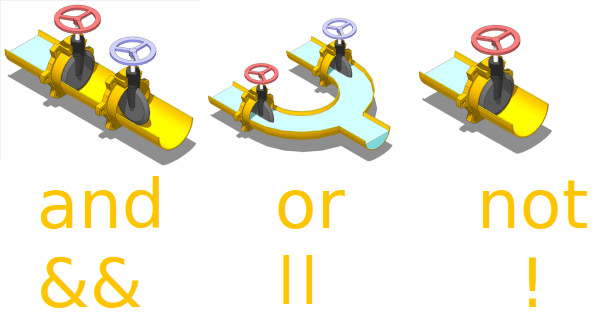
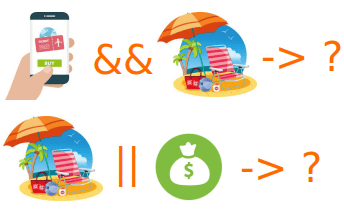

1. Двійкова логіка
Будь-яка програма може бути створена на основі декількох принципів: послідовності виконання і розгалужень.
Послідовність виконання — слідування запису коду зверху вниз. Але не завжди програма повинна виконуватися строго послідовно. Для зміни послідовності використовуються цикли та розгалуження.
Розгалуження — можливість виконати ту чи іншу послідовність коду в залежності від умови. Умова може бути будь-яким, але результат його перевірки
завжди буде одним з двох значень true або false.
Комп'ютер використовує бінарний (від латинського bis - двічі) код. Тобто всього
два значення використовуються для створення будь-яких програм: 0 і 1. Це
означає, що умови також задаються у вигляді 0 (немає, false) і 1 (так,
true).
У математиці існує розділ булевої логіки, в якому умови бінарні, тобто можуть
бути представлені у вигляді 0 і 1, а також у вигляді слів true і false.
Саме ця логіка використовується для реалізації розгалуження.
1.1. Приведення типів
Для того щоб працювала булева логіка необхідно на вході мати два значення. Тому в JavaScript, в логічних операціях, здійснюється приведення типів операндів до true або false. Приведення відбувається якщо в коді виявлений логічний оператор.
Truthy і Falsy — терміни, які використовуються для тих значень, які, в логічній операції, приводяться до true або false, хоча спочатку не були
булями.
Запам'ятайте 6 хибних (falsy) значень, які приводять до
false в логічному перетворенні: 0, NaN, null, undefined, порожній
рядок: "" або '', false. Абсолютно все інше приводиться до true.
2. Логічні оператори
Є три логічних оператори, які використовуються для перевірки виконання множинних виразів.

2.1. Логічне «І»
Оператор && приводить всі операнди до булю і повертає одне зі значень
(операндів). Лівий операнд якщо його можна привести до false, і правий в інших
випадках.
const num = 20;
const result = num > 10 && num < 30;
console.log(result); // true
У коді вище ми перевіряємо умову: змінна num більше 10 і менше 30. Оскільки обидві умови повернуть true, то і результатом всього виразу буде true.
Для того щоб оператор && повернув true, потрібно щоб всі операнди були істинними (truthy). Якщо хоча б один з операндів буде приведений до false, то результатом виразу буде цей операнд.
const num = 40;
const result = num > 10 && num < 30;
console.log(result); // false
2.2. Логічне «АБО»
Оператор || повертає одне зі значень (операндів). Лівий операнд якщо його
можна привести до true, і правий в інших випадках.
const num = 5;
const result = num < 10 || num > 30;
console.log(result); // true
Це теж буде true оскільки хоча б один з операндів був приведений до true.
const num = 40;
const result = num < 10 || num > 30;
console.log(result); // true
А тут ні одна з умов не виконується, тому отримуємо false.
const num = 20;
const result = num < 10 || num > 30;
console.log(result); // false
2.3. Логічне «НЕ»
Оператор ! призводить операнд до булю, якщо необхідно, а потім замінює його на
протилежний.
console.log(!true); // false
console.log(!false); // true
console.log(!1); // false
console.log(!0); // true
2.4. Порядок обчислення
При виконанні логічних операцій, правий операнд може не обчислюватися.

"Купити квиток І відпочити" - якщо лівий операнд "Купити квиток" виявиться
false, то обчислювати другий немає сенсу.
false && (цей операнд не обчислюється)
"Відпочити АБО зберегти гроші" - якщо лівий операнд "Відпочити" виявиться
true, то обчислювати другий немає сенсу.
true || (цей операнд не обчислюється)